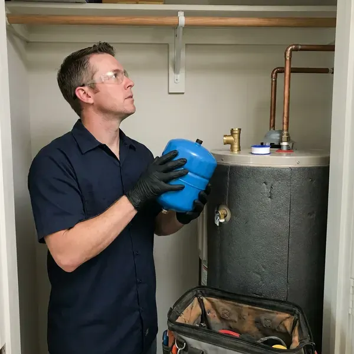

Water Heater Expansion Tank Installation in Elkins, WV
Protect your water heater and home plumbing system in Elkins, WV with a professionally installed expansion tank from GJK Plumbing.
- Licensed Local Plumbers
- Local Elkins Team
- Code Compliant
- Licensed Plumbers

Stop Pressure Spikes From Wearing Out Your Water Heater in Elkins, WV.
Our licensed plumbers are ready to install your expansion tank safely and efficiently.
Professional Thermal Expansion Tank Installation for Elkins, WV Water Heaters
GJK Plumbing installs expansion tanks on closed plumbing systems where a pressure reducing valve, check valve or backflow device keeps heated water from expanding back into the city main. We measure static pressure, size the tank for your heater capacity and precharge the air bladder to match. The result is steady pressure and less stress on every fixture in the house.
Our expertise includes:
- Secure strapping and bracket support on the cold water line
- Code-compliant expansion tank sizing and installation
- Expert installation for all water heater types

Additional Plumbing Installation Services in Elkins, WV
We install water heaters, pumps, lines, and fixtures across Elkins, WV with careful, permitted work that passes inspection the first time.


Customers
Why Choose GJK Plumbing for Water Heater Expansion Tank Installation in Elkins, WV?
Installing a water heater expansion tank is not just about compliance, it is about protecting your entire plumbing system. Without one, thermal expansion can put serious stress on your pipes and water heater, leading to premature failure.
- Prevent Leaks, It reduces the risk of leaks and bursts caused by high pressure, saving you from potential water damage.
- System Protection, An expansion tank absorbs excess water pressure, preventing strain on your water heater and pipes.
- Full System Check, We inspect the PRV and relief valve while we are on site.
Citywide Coverage
We install expansion tanks for homes throughout Elkins, whether the water heater sits in a garage, a utility closet or an attic. Our trucks carry several tank sizes so we can usually finish on the first visit.
Experienced Team
Our team includes highly trained, licensed plumbers with extensive experience in water heater expansion tank installation. They stay updated on the latest West Virginia plumbing codes and best practices.
Safety-First Approach
Many plumbing codes require an expansion tank whenever a water heater is installed on a closed system. We install to local code and support the tank independently so a full tank never strains the fittings.
Trusted Certified Elkins Plumbing Services Professionals
At GJK Plumbing, we take pride in providing licensed, certified plumbing services throughout Elkins, WV. Backed by leading industry credentials, our experienced plumbers combine technical skill with genuine customer care. Whether it is repair, installation, or maintenance, we follow strict safety and quality standards to deliver long-lasting results you can trust.
Call Us Now PHCC Plumbing Contractor Recognition
PHCC Plumbing Contractor Recognition Better Business Bureau (BBB) Accreditation
Better Business Bureau (BBB) Accreditation Angi Certified Pro
Angi Certified Pro ISO 9001 Quality Management Certification
ISO 9001 Quality Management CertificationReliable Water Heater Expansion Tank Installation Services in Elkins, WV
Watts Expansion Tank Installation in Elkins, WV
Watts is a leading manufacturer of high-quality plumbing products, including durable water heater expansion tanks. At GJK Plumbing, we frequently recommend and install Watts expansion tanks because of their proven reliability and performance in Elkins, WV homes. These tanks are built to meet strict industry standards and effectively manage thermal expansion, protecting your water heater and entire plumbing system. Our technicians are experienced with Watts products and handle proper installation.

Commercial Expansion Tank Solutions in Elkins, WV
Commercial properties in Elkins, WV often have larger water heaters and higher hot water demands, making expansion tanks even more critical. GJK Plumbing provides heavy-duty commercial expansion tank installations designed to handle the increased pressure and volume of commercial systems. We work with businesses to minimize disruption during installation and follow all commercial plumbing codes, protecting your property's equipment and keeping hot water flowing for your operations.
Standard Water Heater Expansion Tank Installation in Elkins
Our standard installation service covers traditional tank-style water heaters, with the expansion tank correctly tied into your cold water supply line. We use high-quality, pre-charged diaphragm tanks designed to absorb thermal expansion efficiently. This keeps excessive pressure from building up in your system, which is key for prolonging the life of your water heater and preventing damage to fixtures and appliances. We always test the system thoroughly after installation to confirm proper performance and compliance with local Elkins regulations.
Brands and Quality Products in Elkins, WV
GJK Plumbing uses only high-quality, durable expansion tanks from reputable manufacturers known for reliability. We work with trusted brands like Watts, Amtrol and Z-Flex, so you receive a product built to last in your Elkins, WV home. Our commitment to quality extends from the materials we use to the precision of our installation, giving you a long-lasting solution that effectively protects your plumbing system.
Commercial and Multi-Unit Expansion Tanks in Elkins
Apartment buildings, restaurants and offices with large commercial water heaters or multiple tanks need larger expansion tanks sized for total system volume. We calculate requirements for the entire hot water system, including any storage tanks and recirculation loops. Larger tanks are floor-mounted with proper supports. We schedule work to limit hot water interruption for tenants or customers.
Code-Compliant Installations in Elkins, WV
Local plumbing codes in Elkins, WV frequently require expansion tanks, particularly when a backflow preventer or pressure reducing valve creates a closed system. Water heater replacements, sewer repairs and new plumbing in additions generally require a permit where local code enforcement applies. GJK Plumbing stays up to date with current regulations and makes sure every expansion tank installation is fully compliant. We obtain any required permits and perform installations that pass inspection, safeguarding your home and avoiding fines or insurance issues. Trust us for installations that meet or exceed all local requirements.
Residential Expansion Tank Installation in Elkins
For homeowners in Elkins, a properly installed water heater expansion tank is crucial, especially with so many closed plumbing systems. This device absorbs the increased volume of water when it heats, keeping excessive pressure from building up in your pipes and water heater. Our team makes sure the tank is correctly sized for your water heater's capacity and your home's water pressure, maximizing its protective benefits. We handle all connections and secure the tank according to industry standards, giving you confidence.

Expansion Tank Replacement & Upgrades in Elkins
If your existing expansion tank is old, leaking or no longer working correctly, GJK Plumbing offers expert replacement in Elkins. We can also upgrade your current tank to a larger or more efficient model if your plumbing needs have changed. A failing expansion tank can cause the same pressure problems as having no tank at all. Our team will quickly diagnose the issue and install a new, high-quality tank, restoring protection to your water heating system.
Water Heater Expansion Tank Installation Near Me in Elkins, WV
Our plumbers work in Elkins every day and know how local water pressure and regulators affect water heaters. That experience lets us size your tank correctly the first time. You get a quick, clean installation and a system that stays balanced.
When you search for 'water heater expansion tank installation near me' in Elkins, WV, GJK Plumbing is your trusted local choice. Our team is positioned to provide fast response times and efficient service to homes and businesses throughout the area. We pride ourselves on being the trusted plumbing experts close to you.
GJK Plumbing at a Glance
- Fully licensed plumbing team covering Elkins, WV
- 24/7 emergency service with same-day scheduling
- Clear written estimates, no hidden fees
- 4.8-star rated by 832+ West Virginia customers
Elkins Map
Elkins Information
- Population
- 6,755
- Area codes
- Local
- Service area
- Elkins and communities within 40 miles
- Nearby
- Buckhannon, Bridgeport, Clarksburg, Fairmont
Water hardness in West Virginia ranges from moderate to hard in many areas, and mineral scale is a common issue for water heaters and fixtures. With municipal water pressure that can swing up and down, a water heater expansion tank is a crucial part of protecting your home's plumbing system in Elkins, WV.
Expert Services
Trust our professionals for reliable GJK Plumbing solutions in Elkins, WV.
Our Specialized Plumbing Services in Elkins, WV
At GJK Plumbing, we provide a complete range of plumbing services across Elkins, WV. From leak detection to full system installations, our team ensures fast, precise, and affordable service for both residential and commercial properties. Explore our core services below:


How Our Water Heater Expansion Tank Installation Process Works in Elkins, WV
Here is how we take care of your expansion tank from the first call to the last pressure check.
Request a Quote
Call (681) 223-3607 and tell us about your water heater and any symptoms like a dripping relief valve. We will schedule a visit and give you an upfront price.
Test and Size
We measure your static pressure, check the PRV and relief valve, and choose the right tank size. The tank's air charge is adjusted to match your pressure.
Install and Verify
We install and support the tank on the cold supply, then run the heater through a cycle. Pressure is monitored to confirm the system stays stable.
Frequently Asked Questions About Water Heater Expansion Tank Installation in Elkins
Most residential expansion tank installations cost $250 to $550 including the tank and labor. Attic installs, larger tanks or a new pressure reducing valve can raise the total to $600 to $1,000.
When water heats up, it expands. Without an expansion tank, this expanded water has nowhere to go, increasing pressure within your closed plumbing system. This constant pressure can quickly wear out water heater components and relief valves and even cause leaks or ruptures. The expansion tank absorbs this excess volume, protecting your whole system.
Yes, expansion tanks need occasional maintenance to keep working correctly. It is a good idea to have the air pressure checked annually to match the incoming water pressure. This preventive check helps extend the life of the tank and your water heater.
We install potable-rated tanks from Watts, Amtrol and A.O. Smith. Each is approved for drinking water and built with corrosion-resistant connections.
GJK Plumbing stands behind our workmanship and the quality of the products we install. We offer a warranty on both the expansion tank itself, per the manufacturer's terms, and our installation labor. Specific warranty details will be explained at the time of service.
Usually, installing a water heater expansion tank takes about 1 to 2 hours. This includes assessment, preparation, installation and testing. Our skilled plumbers work efficiently to minimize any disruption to your hot water supply.
Signs of a failing expansion tank include water dripping from the tank's air valve, rust or corrosion on the tank's exterior or a water heater that frequently cycles on and off. You might also notice fluctuating water pressure or a banging sound in your pipes, which indicates excessive pressure buildup.
A standalone expansion tank usually does not require a permit, but one is often included when it is installed with a new water heater. We follow local requirements on every job.
What People Are Saying About Our Plumbing Experts?

Daniel K.
A pipe burst at 11 pm and they actually answered. The plumber showed up within the hour, shut everything down, and had us back to normal the next morning. Could not ask for more.
Emergency Plumbing · Elkins, WV
Robert G.
The trenchless sewer replacement saved our front yard. They walked us through the camera inspection footage first so we knew exactly what we were paying for.
Sewer Line Replacement · Elkins, WV
Mark T.
When our office needed drain cleaning, GJK Plumbing provided quick, reliable service. The plumber arrived on time and made sure every drain flowed perfectly before leaving. Very satisfied.
Drain Cleaning · Elkins, WV
Sofia M.
Two new toilets installed in one visit, no mess left behind, and the tech even adjusted a faucet he noticed was dripping. Fair pricing and really friendly.
Toilet Installation · Fairmont, WVLaura S.
I scheduled a water heater replacement, and the team made the process smooth and affordable. The new unit works perfectly, and they cleaned up after completing the job.
Water Heater Replacement · Elkins, WV
Emily R.
I called GJK Plumbing for plumbing repair, and the technician was fast, polite, and thorough. They explained the problem clearly and fixed it the same day. I will definitely hire them again. Highly recommended!
Plumbing Repair · Buckhannon, WV